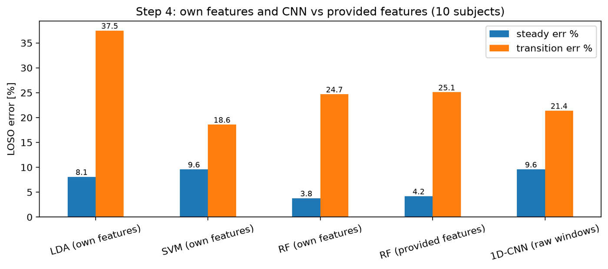
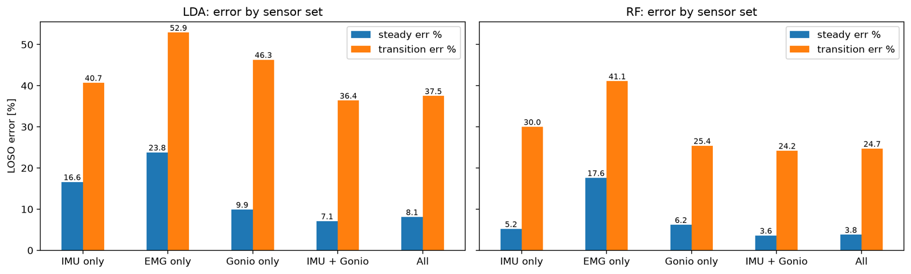
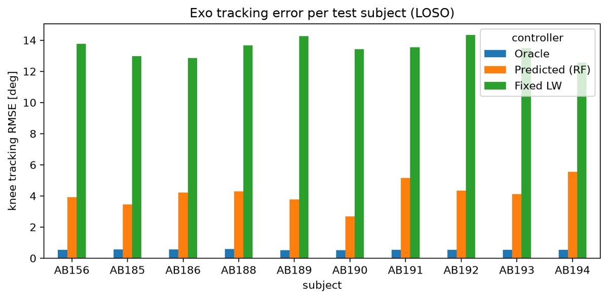
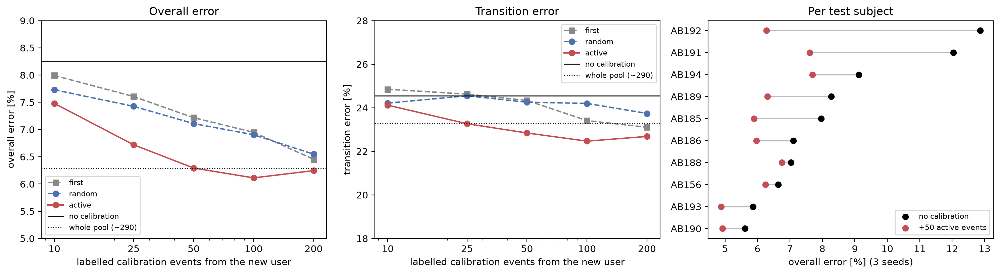

Does knowing a person's next step make a knee exoskeleton better?
I trained classifiers that predict, from body-worn sensors, whether a person is about to walk, take a ramp, climb or descend stairs, or stop. I then used their predictions to switch the controller of a simulated knee exoskeleton in MuJoCo and measured how much better it follows the knee.
90-second walkthrough: problem, method, results and the closed-loop simulation. Silent, with captions.
An exoskeleton has to know what you are about to do
A powered knee exoskeleton should help differently on level ground, on ramps and on stairs. Climbing stairs needs a strongly bent knee and a lot of support, and walking on the flat needs much less. The device cannot ask the user. It has to infer the next activity from body-worn sensors, one step ahead, and if it is wrong or late it pushes the knee the wrong way.
I asked three questions: (1) How well can wearable sensors predict the next locomotion mode for a person the system has never seen? (2) Which sensors are actually needed? (3) Does better intent recognition translate into better exoskeleton behaviour? (4) Can a short calibration walk adapt the model to a new user?
From raw signals to a closed loop
Data: ENABL3S (Hu, Rouse & Hargrove, Front. Robot. AI 2018). 10 able-bodied people walked a circuit of level ground, ramps and stairs wearing IMUs, surface EMG and goniometers on both legs, recorded at 1 kHz.
Gait-event windows
300 ms of all 52 channels, ending at each heel contact and toe-off; channels ordered by the leg that triggered the event
Features
284 per window: mean, SD, min, max, first and last for the mechanical channels; MAV, WL, ZC and SSC for EMG
Classifiers
LDA, SVM, random forest, and a 1D-CNN (~50k parameters) on the downsampled raw window
Honest evaluation
Leave-one-subject-out; error reported separately for steady walking and for transitions
Knee exo in MuJoCo
The predicted mode switches the reference and gains of an impedance controller with inverse-dynamics feedforward
8.5% error on unseen people, but transitions are the hard part
My features with a random forest reached 8.5% overall error, slightly better than the features supplied with the dataset (9.0%). In steady walking the error is only 3.8%, but at transitions, the moments that matter most for an exoskeleton, it rises to 24.7%.
The SVM (18.6%) and the 1D-CNN (21.4%) are better at transitions. The most common mistake is switching one step late: walking → ramp descent (65% error) and walking → standing (60%) are usually still predicted as walking.
| Model | Overall | Steady | Transition |
|---|---|---|---|
| LDA, own features | 14.8 | 8.1 | 37.5 |
| SVM, own features | 11.7 | 9.6 | 18.6 |
| RF, own features | 8.5 | 3.8 | 24.7 |
| RF, provided features | 9.0 | 4.2 | 25.1 |
| 1D-CNN, raw windows | 12.2 | 9.6 | 21.4 |
Error in %, leave-one-subject-out over 10 subjects.

EMG was not needed
I retrained the random forest on each sensor group. IMU + goniometer alone gave 8.2%, as good as all sensors together (8.5%). EMG alone gave 23.0%, and EMG features made up only 18% of the forest's feature importance.
For a wearable device this is good news: EMG electrodes are the hardest sensors to put on, keep in place and calibrate.
Waiting longer helps only a little: ending the window 120 ms after the gait event lowers transition error from 24.7% to 22.3%. Deciding at the gait event itself costs little.

Closing the loop: 3.3× lower knee error
A MuJoCo model of a leg on a test bench: the thigh is fixed and the shank and foot are moved only by the exoskeleton motor (limited to 60 Nm), as if the user's own muscles were weak. Each mode has a reference knee trajectory taken from the dataset, and the controller combines inverse-dynamics feedforward with per-mode impedance gains. At every heel contact the mode is chosen by one of three sources, and I ran every circuit of all 10 test subjects:
| Mode chosen by | Knee RMSE [°] | Max error [°] | Mean torque [Nm] |
|---|---|---|---|
| Oracle (true mode) | 0.54 | 4.1 | 8.2 |
| My classifier (RF, leave-one-subject-out) | 4.13 | 24.3 | 8.2 |
| Fixed level-walking controller | 13.49 | 55.4 | 7.7 |
A real recorded walk of test subject AB156, never used in training. Brown leg = the simulated leg moved by the exo; transparent green = the knee angle the person needed. Grey bands in the bottom plot mark strides where the classifier chose the wrong mode.

Most of the remaining error comes from a few strides. The most harmful mistake is a wrong "standing" guess during walking: the controller then holds the knee almost straight while the person needs it to bend. In a real device that is a safety issue, and it suggests a rule such as "never switch to standing in the middle of a stride".
A 3-minute calibration walk cuts the error by a quarter
The error varied a lot between people (5.6% to 14.6%). Following two recent papers, Hur et al. 2025 (Sci. Rep., user-adaptive training) and Ding et al. 2024 (Sensors, active learning), I let each test subject walk their first 6 circuits (about 3 minutes) as a calibration walk. I tested on the remaining circuits.
Adding just 50 labelled gait events from the new user, the ones the model was least sure about, lowered the error from 8.3% to 6.3%. All 10 people improved (Wilcoxon p = 0.002), and the worst one went from 12.9% to 6.3%. Choosing uncertain events beat random choice and was as good as labelling the whole walk (about 290 events). A model trained only on the new user's data was worse than no calibration, so the other people's data are still essential.
The honest catch: transition error barely moved (24.6% → 22.6%). Calibration fixes who the person is, not when a mode change shows up in the signals. That is my next question.
| Calibration | Labels | Overall | Transition |
|---|---|---|---|
| None (other people only) | 0 | 8.3 | 24.6 |
| + 50 random events | 50 | 7.2 | 23.8 |
| + 50 least-sure events | 50 | 6.3 | 22.6 |
| + whole calibration walk | ≈ 290 | 6.3 | 23.2 |
| New user's data only | ≈ 290 | 9.1 | 31.8 |
Error in % on the circuits after the calibration walk; 10 subjects × 3 seeds.

What this does not show
- The exoskeleton is simulated: a leg on a bench with a passive user, not a person walking with a real device.
- All 10 subjects are able-bodied. People who need an exoskeleton move differently, so the error would likely be higher.
- The classifier decides once per stride, at heel contact. A real controller would also need confidence thresholds and safe fallback modes.
From the dataset to my own sensors
I am now building a low-cost wearable sleeve (ESP32 with IMU and EMG sensors) to run the same idea on live data: measure the joint angle on my own body and drive the MuJoCo model in real time, then recognise activities from my own recordings.
All code (data parsing, features, models, controller, simulation and videos) was written for this project. It is available on request: tasfiaa.chowdhury@gmail.com.
Data: B. Hu, E. Rouse and L. Hargrove, "Benchmark datasets for bilateral lower-limb neuromechanical signals from wearable sensors during unassisted locomotion in able-bodied individuals," Frontiers in Robotics and AI 5:14, 2018. doi:10.3389/frobt.2018.00014